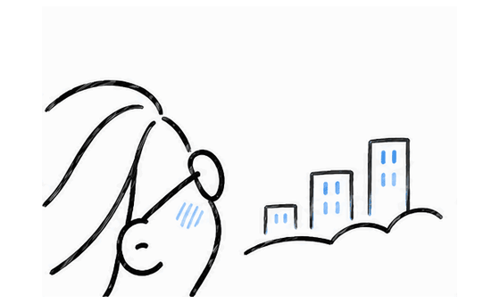
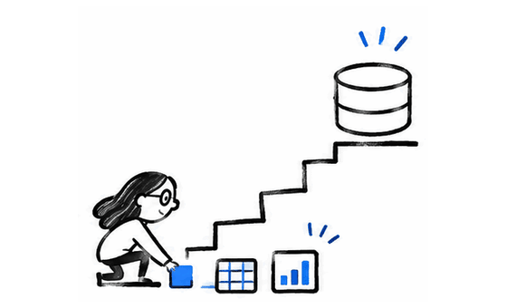
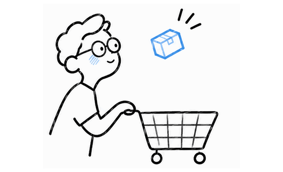

FOCUS AREA 01
Market & Consumer Insights
Turning transactional and panel data into market share, retention and competitive insights.
01 / ABOUT ME · DATA ANALYST / ANALYTICS ENGINEERING
I work across consumer analytics, analytics engineering and business problem-solving.
I enjoy connecting technical rigor with context and clear storytelling, turning complex datasets into insights people can actually use.
02 / TOOLKIT
A mix of data tools, analytical methods and technologies that help turn complex questions into clear answers.
03 / WHAT I WORK ON
Finding stories hidden in data.

FOCUS AREA 01
Turning transactional and panel data into market share, retention and competitive insights.

FOCUS AREA 02
Building pipelines and self-service workflows that make complex datasets easier to use.

FOCUS AREA 03
Understanding shopper behavior and communicating the patterns behind commercial decisions.
The animations are conceptual illustrations. These sections summarize professional focus areas, not public client case studies or proprietary datasets.
04 / THE JOURNEY
AUG 2025 — PRESENT
Custom Data Analyst
Custom consumer and market analyses, self-service tools and scalable data pipelines.
50+ consulting cases supportedAUG 2024 — AUG 2025
Junior Data Analyst
KPI anomaly detection, data quality monitoring and root-cause analysis on consumer-panel data.
Anomaly resolution: 3 days to 1JAN 2021 — JAN 2022
Market Researcher
ESG benchmarking with Power BI and API data, plus research-backed business cases.
20+ companies in ESG dashboard05 / BEYOND THE DATA
Painting, live music, nature, reading, films and staying active — the little things that keep me curious and creative outside of work.